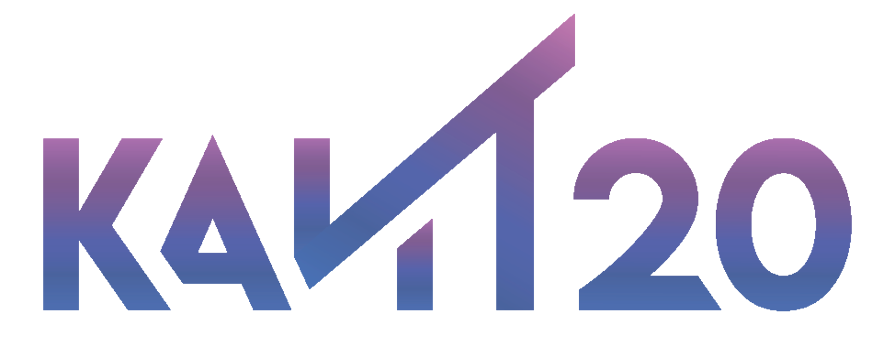

Что дает волонтерская деятельность?
Участие в добровольческих проектах — это возможность для личностного и профессионального роста. Волонтеры получают ценный опыт работы в команде, развивают коммуникативные и организационные навыки, которые востребованы в любой сфере. Это также способ расширить круг общения, найти единомышленников и внести реальный вклад в решение социальных, экологических и культурных проблем. Для многих это становится важным шагом к самоопределению и пониманию своих сильных сторон.
Основные направления волонтерства
- Социальное: Помощь пожилым людям, детям, оставшимся без попечения, людям с ограниченными возможностями здоровья.
- Экологическое: Участие в субботниках, посадка деревьев, помощь заповедникам и приютам для животных.
- Событийное: Помощь в организации спортивных, культурных и образовательных мероприятий — от форумов до фестивалей.
- Культурное: Помощь в музеях, библиотеках, участие в восстановлении памятников архитектуры.
- Донорство: Безвозмездная сдача крови и ее компонентов, вступление в регистр доноров костного мозга.
Как начать: основные направления и ресурсы
Начать помогать проще, чем кажется. Существует несколько путей для поиска своего первого волонтерского проекта.
Волонтерство вне колледжа
Крупнейшая федеральная платформа, где собраны тысячи волонтерских вакансий от проверенных организаций по всей России.
Перейти на сайт → Волонтерство в колледже
В колледже КАИТ №20 регулярно проходят волонтерские акции. Информацию о них можно получить у кураторов или в студенческом совете.
На сайт колледжа →Благотворительные фонды
Можно помогать напрямую, обратившись в профильные фонды, такие как «Старость в радость», «Подари жизнь», WWF, Greenpeace и другие.
Найти свое направление
Не уверены, с чего начать? Наша анкета поможет определить, какой вид волонтерства вам ближе, исходя из ваших интересов.
Пройти анкету →